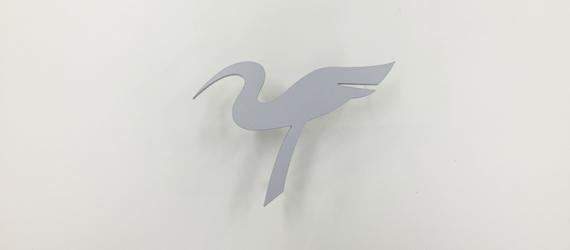
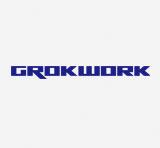
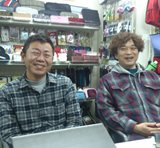
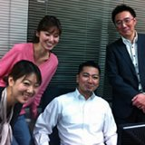
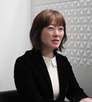
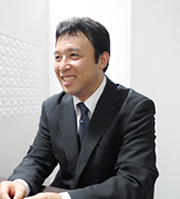

税務プランニング
節税の目的は、会社の財務体質を強くし、安定した会社をつくりあげることにあります。余計なものを買って税金の負担を減らしても、年払いをして税金を繰り延べても、それは一過性の対策にしかすぎません。会社経営の目的を見定めたうえで、長期的視点に立った総合的な対策を考えてこそ、意味のある節税対策となります。
当事務所では、年間のお付き合いを通じて、長期の税務プランニングを会社や経営者の目的に合わせてご提案しています。
企業の経営環境はますます高度化、複雑化を余儀なくされます。世界経済の影響のみならず、システムや仕組みの進化、予期せぬ災害や人災。そんな中、自社の継続、発展を考えていくには、経営者はあまりにも多忙で孤独です。
会社経営においては、実にさまざまな問題、課題を解決する臨機応変な対応と、中長期的な戦略が必要です。会社の歩んだ昨日が今日の結果となり、今日の行動が未来の一歩となる。私たちは、一人ひとりの経営者の皆様とともに、単年度計画から中長期の目標設定、目標管理と実行検証、経営サイクルの確立と定着により、会社の未来を共有させていただきます。
経営の原理・原則に基づいた税務会計と経営者一族の財産の保全、リスクマネジメントまで、私たち「税理士法人TOKIZAWA&PARTNERS」は、個々の企業に適合したトータル経営サービスを提供していきたいと考えています。まずはご相談ください。ともに考え、ともに歩くことが、私たち「税理士法人TOKIZAWA&PARTNERS」の願いであり、目標でもあります。

当事務所で作成する決算書は、経済産業省が定める中小企業会計指針（または要領）に完全に準拠。金融機関、取引先、株主などの利害関係者に対し「社会的信頼性の高い決算書」であることを証明します。
全国の法人税申告書のうち書面添付が付けられたものは7.4%にすぎません（平成23年実績、国税庁発表）。当事務所では原則として全ての会社に書面添付を適用し、税務調査を事前に防ぎます。
毎月の会計データをホストコンピューターに伝送処理し、会計帳簿がいつ作成されたものかを客観的に記録。粉飾や脱税をしていないことを会計システム自体が担保します。
財務会計の立場からクライアントの「経営」に踏み込むスタンスこそがこの税理士法人の特徴であり、経営者が自らの会計リテラシーを高めることを後押しし、そのような視点が根本にあるからこそ、お客さまに対する様々な「提案」業務が生まれていると考えられる。その結果、税理士法人TOKIZAWA&PARTNERSのクライアントの実に80%以上のお客さまが黒字申告を実現しているのである。これは全国平均と比較し2.3倍以上の驚異的な実績である（国税庁公表の平成29年度黒字申告割合は34.2%）。
全国の税務署に提出された法人税の申告書のうち、この保証書（書面添付）が付けられた申告書は７.４％にすぎません（平成２３年実績、国税庁発表）。逆にいえば、92.6％の税理士は申告書に保証書（書面添付）を付けておらず、品質の保証をしていないのです。
中小企業が、金融機関から融資を受ける場合、決算書それ自体の信頼性が非常に重要なものとなります。当事務所で作成する決算書は、経済産業省が定める中小企業会計指針（または要領）に完全に準拠しますので、金融機関、取引先、株主などの利害関係者に対し「社会的信頼性の高い決算書」であることを証明することができます。
銀行が行う融資の判断は、すでに申告された過去の決算書の「格付け」によって行われることになります。したがって、今現在融資を必要としなくても、将来の資金需要に備え、決算書の質を少しでも高めておくことが重要です。銀行格付けは決算書上の勘定科目の数値が大きく影響しますので、勘定科目ひとつひとつを意識した決算書を作成します。
当事務所では毎月の会計データをホストコンピューターに伝送処理することにより、会計帳簿がいつ作成されたものであるかを客観的に記録する仕組みを採っています。これは「データ処理実績証明書」として発行されますので、粉飾や脱税をしていないことを会計システムそれ自体が担保することになり、信頼性の高い証拠資料として、税務署、金融機関より評価を得ています。
個々の企業に適合した、トータル経営サービス。
節税の目的は、会社の財務体質を強くし、安定した会社をつくりあげることにあります。余計なものを買って税金の負担を減らしても、年払いをして税金を繰り延べても、それは一過性の対策にしかすぎません。会社経営の目的を見定めたうえで、長期的視点に立った総合的な対策を考えてこそ、意味のある節税対策となります。
当事務所では、年間のお付き合いを通じて、長期の税務プランニングを会社や経営者の目的に合わせてご提案しています。
会計の記録は、税務署に提出するために必要なのではなく、「適切な経営判断を行うため」に必要なものです。会社の成長段階によっては、経営者にとって必要となる情報の質が異なりますので、コストを抑え、記帳代行で対応した方が良い場合もあれば、社内に経理部を持ち、会計システムを充実させた方が良い場合があります。
当事務所では、会計ソフトの導入支援、基幹システムの構築、クラウド会計、記帳代行から人事のことまで、「経営者の円滑な意思決定」という視点で、システムのアドバイスをしております。
例えば、銀行から借り入れをする場合、多くの経営者は「借りられるか？」に視点が行きがちですが、より重要なのは、「もっと多くのキャッシュを増やすための借入であるか？」です。新規店舗出店の採算性シュミレーション、事業の多角化をはかる上での事前シュミレーションはもちろん、「社長の情熱をかたちにする事業計画書」の作成をサポートします。
目標が明確に定められた事業計画書の有無が、あなたの事業の成功を裏付けます。
昨今の税制改正により、法人税の実効税率は約３７％、個人の所得課税（所得税＋住民税）は５５％となり、この差が約２０％にもなります。会社で利益が出そうな場合、役員報酬を上げて対応するといった、あたり前の節税策は必ずしも有効ではありません。他方、相続税の最高税率は５５％、基礎控除が大きくカットされる一方で贈与税の優遇策は充実しております。
法人と経営者は、表裏一体の関係にあります。対策ひとつで、経営者の１０年後の資産状況はガラリと変わります。後継者への事業承継までを考えた場合、長期を見据えた早めの対策がより重要となります。当事務所では、相続税、生前贈与、事業承継を含めたトータルな対策をご提案しています。
「税務調査に時間を取られたくない」というのは、経営者の本音ではないでしょうか。当事務所では、信頼性の高い高品質な税務申告書を作成し、税務調査を事前に防ぐために、万全な対策を取ります。
計算や審査した事項を明確にした書面を税務申告書に添付する制度を「書面添付」といいますが、これにより、税理士の関与の度合いが明確になり、疑義がなければ税務調査が省略されます。一方、この「書面添付」のついた税務申告書は、金融機関からの信用向上にもつながり、会社の「信用力」が飛躍的に高まります。
お客様からいただいた、リアルな声をご紹介します。
何をもって判断すべきなのかを迷う時に、判断するために必要なわかりやすい情報をしっかり提供してくださるので、いつもスムーズに決断することが出来ているように思います。また、税務に関する細かいことを確認したいことも多いのですが、いつも対応がスピーディーなので本当に助かっています。
私がどのように事務所を経営していきたいかという価値観もよく理解してくださっているので、いただくお話が的確でとても心強いです。いつも応援していただいているという実感があり、嬉しいです。これからもよろしくお願いします。

鴇沢先生には、創業時より６年間お世話になっております。税務に関する的確なアドバイスはもとより、経営者の視点で常に中期・長期の展望を相談できるので、精神的にもとても助けてもらっています。
税務・会計面での不安が大幅に軽減されるため、本業に集中して取り組む事ができます。まさに、中小企業の心強いベストパートナーです。今後とも、末永くおつきあい頂ければ幸いです。

創業当時から鴇沢先生にお世話になっております。企画開発という特殊な業種で、国内のみならず海外の工場にも製造拠点を持ち、輸入取引や国外取引が含まれるため、会計処理・税務面でいろいろお手数をおかけしておりますが、的確なアドバイスをいただき、とても助かっております。
節税対策はもちろん、販売管理ソフトと会計ソフトの連動など、会計のしくみもしっかり構築していただき、わが社の守備面はとても安定しております。今後とも何卒よろしくお願いいたします。
個人事業立ち上げの頃からお世話になっております。親身になってお付き合い頂き、去年法人化させていただきました。会計処理、税務面も分かりやすくご説明頂き、それ以外のこちらが知らないと損するような事も丁寧に教えてくださいますし、毎月お会い出来るので、その時々きちんとお話出来るのも大変助かっております。
弊社のようなサービス業では忙しさのあまり、税務面がおろそかになりがちですが、税理士法人TOKIZAWA&PARTNERS様のおかげで本業に打ち込む事ができ、支店も出店することが出来ました。ただ数字だけを出す会計事務所もありますが、税理士法人TOKIZAWA&PARTNERSなら安心して皆様方もお仕事に邁進出来るのではないでしょうか。今後共、末永いお付き合いをお願い致します。

創業当時からお世話になっており、日々様々な相談に乗っていただき、非常に助かっております。弊社のビジネスモデルをご理解頂いた上で的確なアドバイスを頂けるので経営をしていく上で信頼できるパートナーを得られたと心強く感じております。
税務だけでなく幅広いコンサルティングも先生の魅力です。今後とも、宜しくお願い致します。
３年ほど個人事業を営んでおりましたが、鴇沢先生より、法人成りのご提案をいただき、合同会社を設立しました。うちの会社の事業展開をご理解いただいた上で、最終的に株式ではなく合同会社（LLC）を設立することになりました。税務面のメリットだけでなく、様々な会社の諸事情を考慮していただき、ありがたく思っております。今まで経営のことは誰にも相談できませんでしたが、税理士法人TOKIZAWA&PARTNERSというパートナーを得ることができ、安心して事業に専念することができています。
今年８月に、バイオマス燃料に関わる会社を設立するに当たり、知人に鴇沢先生をご紹介していただき、設立月日を指定した大変厳しい日程の中での設立に、大変お世話になりました。その後、会社の運営に関する相談にも誠心誠意対応して頂き、大変感謝いたしています。
今後の会社経営に関して厳しい状況に直面することと思いますが、親身になって対応いただけるものと期待しています。ご紹介いただき、大変有難く思っています。
会社を設立したいという気持ちをずっと抱いていたのですが、知人の経営者に話を聞いてもそのメリット、デメリットを理解できず、行動を起こせずにいました。そんな時に知人の伝手で税理士法人TOKIZAWA&PARTNERSを紹介していただき、起業に全く無知な私に親切丁寧にイチから教えてくださいました。
会社を興すには並ならぬ時間や労力を費やす覚悟でいたのですが、とてもスムーズに進み驚きました。それはきっと御社様がわたくしの見えないところで細やかな気配り、御尽力があったからこそだと感謝しております。これから経理や納税など大変な事もあると思いますが、御社様に相談すればきっと賢明な運びで進言をいただける事であろうと大きな信頼を寄せてさせております。
「どこまでも親身に。どこまでも社長の味方になれる税理士に。」
「中小企業の未来に活力を。」
大学在学中は経済学者の道を志すも、「経済学の大局を極めるより、中小企業の社長の力になること」に意義を見出し、経営者にとって一番身近な存在である税理士の勉強を始める。東京中央税理士法人（港区虎ノ門）社員税理士（取締役）を経て、平成２３年千代田区平河町にて独立開業。上場企業監査役、医療法人幹事などを兼任。東京税理士会・麹町支部所属、TKC全国会（東京中央会）理事、経済産業省認定「経営革新等支援機関」。

「経営者の想いを共有したい！」
会社はよく船に例えられます。「誰と、どこへ、何のために向かうのか？」私たちは経営者の想いを共有し、一緒に航海するクルーの一員です。未来への一歩を私たちと一緒に踏み出しましょう。得意業務：相続税対策、事業承継事前対策と実行支援、組織再編、企業再生コンサルティング、連結納税、税効果会計導入コンサルティング。

「会社の明るい未来の創造に！」
経営者や会社が抱える問題に対して、身近な相談相手となり、経営者が描く未来を一緒に実現していきたいと考えています。そして、経営者はもちろん、その企業で働く従業員やその家族が幸せになることが私の願いです。すべては「やるか、やらないか」で決まるのだ。得意業務：税務調査対策・交渉、事業再生コンサルティング、大型の節税対策スキーム作成。
長野と東京の2拠点でサポートいたします。
該当箇所をクリックすることで「回答」をご覧になれます。
税理士業務は、経営者のとても身近な存在であるため、当事務所ではどんな些細なことでも、まずは顧問である当事務所にご相談いただけるよう、相談しやすい環境づくりを心掛けております。当事務所で直接解決できない案件であっても、許認可のことであれば行政書士、登記のことは司法書士、法律のことは弁護士、人事のことは社会保険労務士、不動産のことは不動産鑑定士や宅建主任者、融資のことは金融機関、保険のことは保険代理店、生活一般のことはファイナンシャルプランナーといった具合に、どんなことでも、各種専門家と連携しながら、最後までお手伝いいたします。
当事務所のクライアントは３０～４０代の若い経営者が多数を占めます。とても元気のあるやり手経営者が多いためか、黒字申告割合が非常に高いのが特徴です。業種は、サービス業、製造業、建設業、飲食業、不動産業、医業や士業など多岐にわたります。
共通点としては、税務面のサポートだけでなく、会社の経営に役立つ数字のサポート、社長個人の税務対策や一家の財産管理まで、幅広く対応して欲しいという要望が強いため、事業承継や大型の節税対策、財産の保全を見据えた長期対策スキームの構築など、会計処理だけでなく、一歩踏み込んだお付き合いをさせていただいております。
毎月の会社へのご訪問を希望されるクライアントが多数を占めますが、お客様の事業の状況、経営の状況に合わせて、最適なお付き合いの形を考えますので、四半期ごとにお会いするような契約も可能です。また、当事務所への来所型契約、スポットでのご相談、単発の決算代行も随時お受けしておりますので、お気軽にご相談ください。
当事務所では、税務署からも金融機関からも、最も信頼性が高い「TKC会計システム」を採用し、お客様に推奨しております。ただし、お客様の使用状況に合わせて、「弥生会計」や「勘定奉行」などにも対応しておりますので（同システムのインストラクターの資格も所持しております）、お気軽にご相談ください。また、販売管理ソフトやクラウド会計システム、基幹システム導入のご相談にも応じております。
当事務所では、会社の成長度合いに応じたお付き合い方法をご提案しております。
たとえば、創業したばかりの会社は、領収書や請求書類が少なく、納税額が何千万円も出るような中堅法人向けの高度な節税対策や納税予測、スキームの作成等を、多くの場合、必要としません。創業後間もない会社に必要なのは、①将来利益が出た時に税金が出ないようにするための損失の繰り越し、②消費税の選択方法の適切な判断、③役員報酬の決め方など、ある程度ポイントが絞られます。当事務所では創業したばかりの会社に必要なサービスだけに特化して料金を下げるという契約プランをご用意しております。
まずはご相談ください。報酬を下げる分、一部の作業をお客様にお願いするなど、業務の質を落とすことなくご対応できるよう、対策を立てたいと思います。
年末調整、法定調書の作成、償却資産税申告、税務調査（意見聴取）対応（その他当事務所規程による）については、別途報酬が発生します。ただし、開業１年目のお客様には、「起業家応援パック」をご用意しております。なお、毎年の株価対策が必要な会社には株式評価を決算料に含めるなど、お客様の状況に合わせた契約も可能です。
当事務所では、税務調査を事前に防ぐために、万全な対策を取ります。信頼性の高い決算申告書を作成することはもちろん、計算や審査した事項を書面で明らかにする「税理士法33条2による書面添付」（税理士による品質保証制度）を、原則としてすべての会社に適用しております。
この「書面添付」が付いた法人税の確定申告書は全国で７％（平成２３年度実績）しかありません。逆に言えば、９３％の申告書には税理士の品質保証がなされていないわけです。当事務所では、いざという時の調査対応はもちろん、「税務調査を事前に防ぐ」という観点からお付き合いさせていただきます。なお、この書面添付のついた申告書は、同時に、金融機関からの信頼性向上に直結します。
助成金は、会社が行う事業や人事の状況などに応じて支給されますが、実際に受給するには申請のタイミングが極めて重要になります。なお、助成金の初回相談は無料、当事務所の社会保険労務士が対応します。
下記フォームよりお問い合わせください。どんな些細な疑問にもお答えいたします。